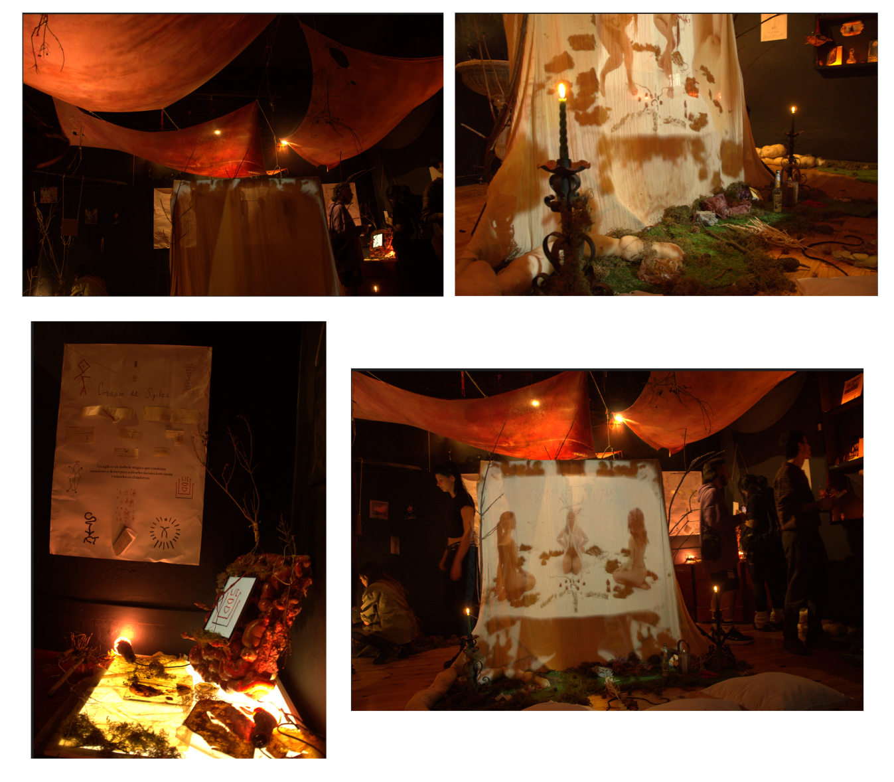

Dejamos vulnerabilizar nuestros cuerpos y afectarnos por fuera de las lógicas proctivas, para crear instalaciones que funcionan como umbrales híbridos entre lo digital y lo sagrado. En estas obras, los algoritmos actúan como espíritus sintéticos convocados para amplificar energías del entorno, mientras objetos, sensores y elementos naturales se transforman en amuletos que tejen nuevas formas de protección. Así, la tecnología y la naturaleza no se oponen sino que coexisten en un mismo gesto ritual, reconfigurando nuestra sensibilidad y permitiendo que lo orgánico y lo artificial se protejan mutuamente en un territorio donde la magia se vuelve código y el código se vuelve magia.